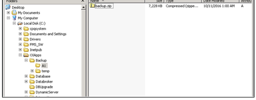

Verifying Machine Server Backups
Purpose
This document describes how to verify that Machine Server backups are properly occurring. It assumes that SWSet 223 (SCS-0237-GR223) or greater is being used.
Application
This work instruction applies to all Space Plants that have FSC and Space IS Machines.
Safety
Follow all plant safety requirements.
Procedure
- On the backup Machine Server, log off the obop account (using the sequence Start-, andgt;Shutdown-, andgt;Log Off).
- Log onto the backup Machine Server using the administrator account (password: scsgolden).
- Right-click the My Computer icon, and select explore.
- Navigate to the C:\SpaceApps\Backups\, andlt;server name, andgt;directory, where , andlt;server name, andgt; is the name of the Machine Server backup to be verified.
- In this directory, confirm the presence of a file named backup.zip. It should
have the current (today’s) date in the Date Modified column, with a time of
approximately 1:00AM (see Figure 1).
Figure 1. Figure 1: Restore Machine Server Utility 
- Double-click the backup.zip file.
- Open the temp directory in the backup.zip file (see Figure 2).
Figure 2. Figure 2: Temp Directory Contents 
- Verify that the following files are present:
-
eso1 (directory).
- Empty directory
-
eso1 (directory).
-
eso2 (directory).
- Empty directory.
-
esov1 (directory).
- Profiles for the ESO.
-
esov2 (directory).
- Empty directory.
-
ldr1 (directory).
- Profiles for the lehr loader.
-
ldr2 (directory).
- Empty directory
-
ndl1 (directory).
- Profiles for the needles.
-
ndl2 (directory).
- Empty directory.
- BackupFiles.bat.
- BAK.tkn.
- CS3.ini.
- CS3_1xx.DAT.
- The xx indicates the section’s IP address.
- These files exist for COM-SOC 3 lines only.
- These are the primary backup for the current running timing on the forming Machine. They should have a modified time between 12:40AM and 1AM of the current day.
- CS3_1xx.BAK.
- The xx indicates the section’s IP address.
- This files exist for OSI/EICOM lines only.
- These are the secondary backup for the current running timing on the forming Machine. They should have a modified time between 12:40AM and 1:00 AM of the current day.
- DEVICE.tkn.
- Machine_Configuration.txt
SOP Used In
- SOP-06-004-B Activating a Backup Machine Server
- SOP-16-009 Configuring MDMS Backups
- SOP-16-010 Manual MDMS Backup
Equipment
Space Forming Machine Server Backup System
References
Document Classification
- Asset Protection and Stability
- Organization and Training
Collaboration
|
Country Group |
Role |
Name |
|
Americas North |
Forming Electronics Specialist |
Dan Knuckles |
|
Europe |
Forming Electronics Leader |
Remko Beckers |
|
Central Europe |
Regional Leader Forming Electronics |
Ruud Bormans |
|
France - Spain |
Jean-Pierre Locato |
Jean-Pierre Locato |
|
Latin America |
IS Machine Leader |
Miguel Morales |
|
Engineering - Forming |
Associate Engineer |
Jose Gonzalez |
|
Global |
Global Forming Electronics Leader |
Franklin Barrios |
Revision History
| 2016-12-01 |
Originally Released as Process Control SOP-16-008 |
| 2022-07-05 |
Approved by Franklin Barrios, Global Leader FES Network Moved to GMF Site as FES-03-117 |